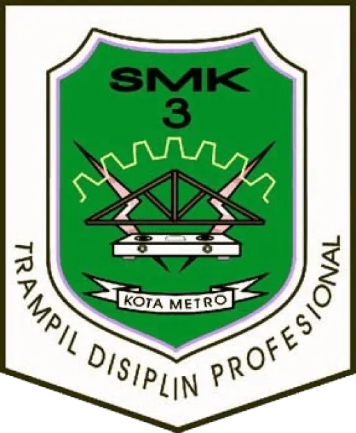

SMK NEGERI 3 METRO




JUJUR • UNGGUL • AKTIF • RELIGIUS • ANDAL

Pelaporan pelanggaran (Whistle Blowing System) adalah pengungkapan tindakan pelanggaran atau pengungkapan perbuatan...
Selengkapnya
Metro, 8 Juni 2026 – Sebagai bagian dari upaya penguatan pembangunan Zona Integritas dan penerapan tata kelola yang baik, SMK Negeri 3 Metro melaksanakan kegiatan Sosialisasi Penanganan Benturan Kepentingan...
Selengkapnya
Metro, 4 Juni 2026 – SMK Negeri 3 Metro melaksanakan kegiatan Sosialisasi Zona Integritas kepada Orang Tua/Wali Siswa pada Kamis, 4 Juni 2026. Kegiatan ini merupakan bagian dari komitmen...
Selengkapnya
Dalam upaya mewujudkan tata kelola sekolah yang bersih, akuntabel, dan berorientasi pada pelayanan prima, Unit Kerja SMK Negeri 3 Metro secara berkelanjutan melaksanakan Sosialisasi Pembangunan Zona Integritas (ZI)...
Selengkapnya